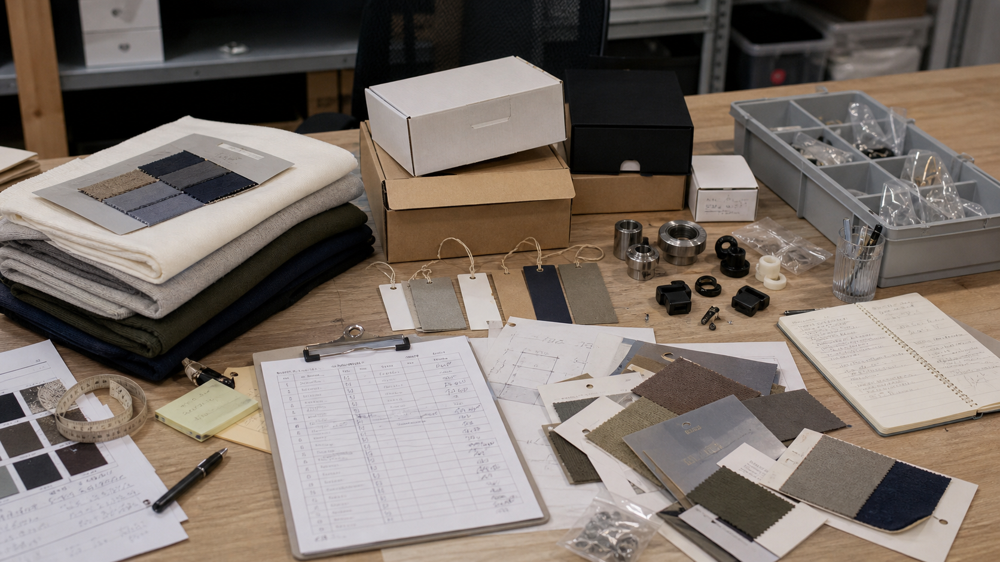
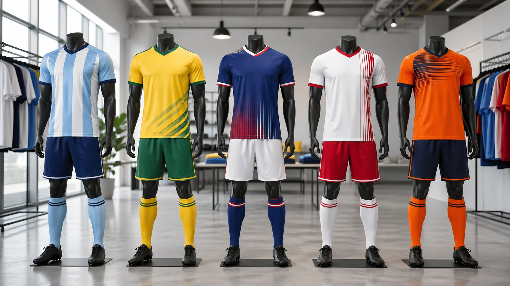
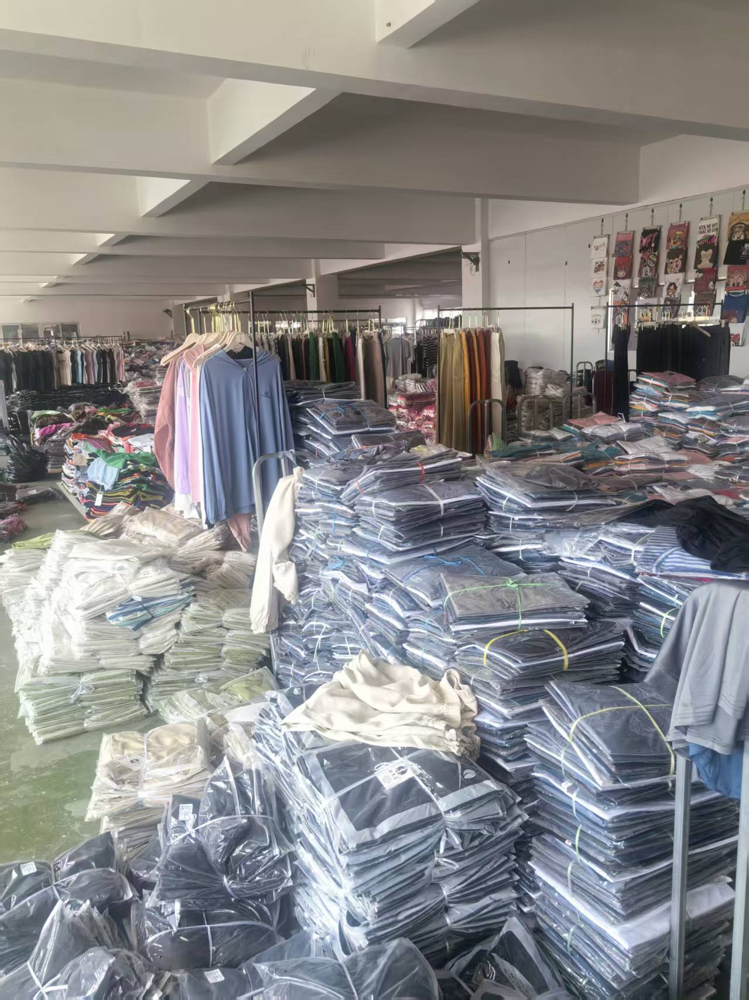
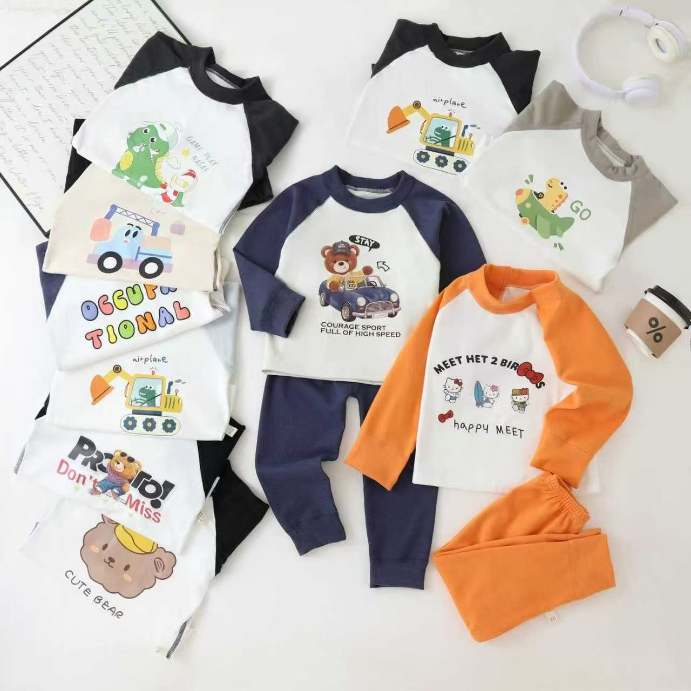
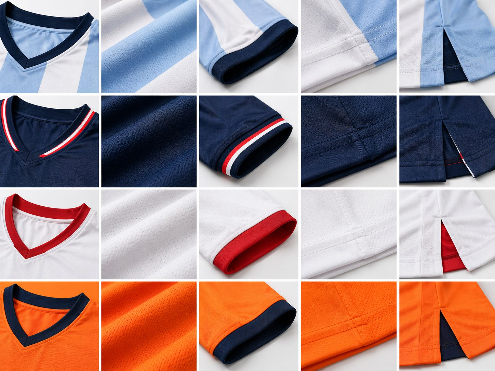
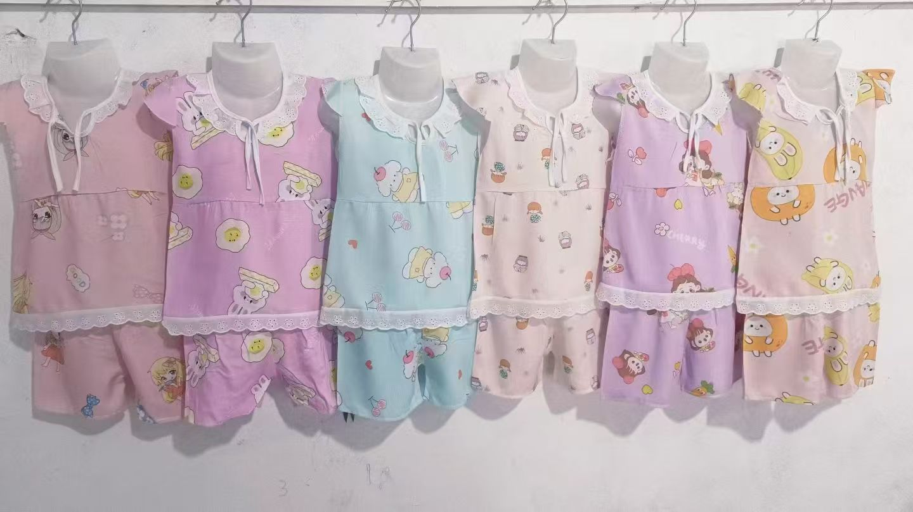
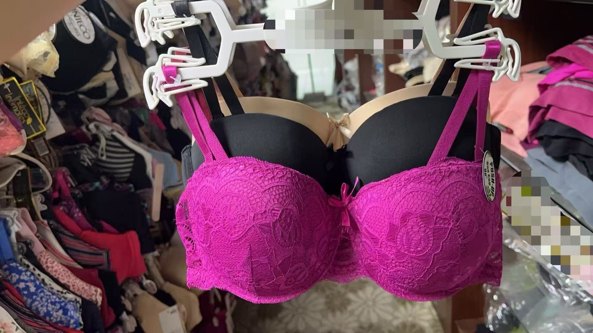
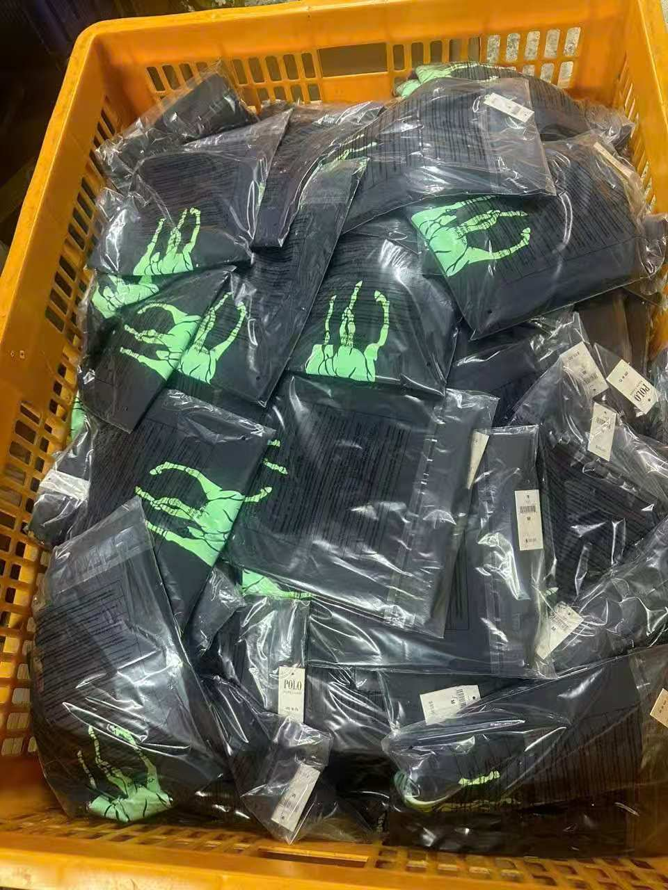
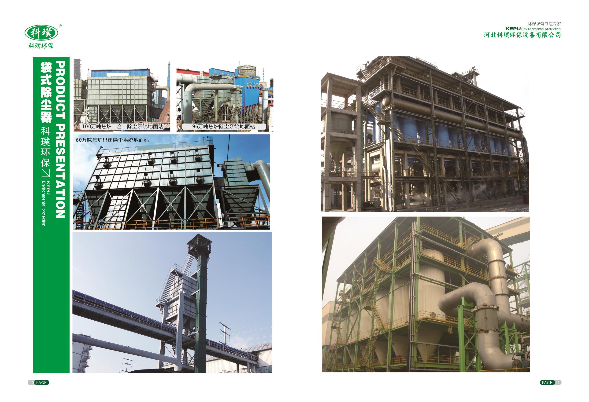
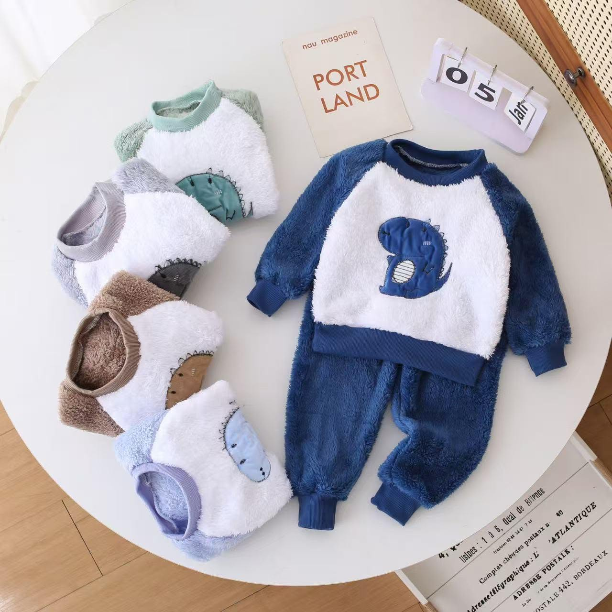

Apparel and footwear
Soft goods suppliers
Clothing, children's wear, shoes, women's pants, jerseys, sample review, trims, labels, and packaging checks.
Verified Suppliers
Each profile shows supplier fit, order profile, verification focus, and what the supplier can handle before shipping, while names, codes, and client-linked details stay private.
Why no public names
Privacy matters. You can trust the proof more when real examples are shown without exposing private details.
You can check
Category fit, order profile, workshop evidence, shipping-stage readiness, and what was checked before recommending a supplier.
Why this helps
You can compare supplier fit across consumer and industrial work before moving into a larger order.

Verified categories
Supplier fit, category depth, and real proof shown with private details hidden.
Why this page exists
It should help you answer two questions quickly: have similar categories been handled before, and does the proof look real enough to trust the working style?
The categories below are examples, not a boundary. If your product is not listed, it can still be reviewed for supplier sourcing, factory verification, quantity checks, quality checks, production control, and shipping coordination.
Before you ask for supplier matching
These are public examples. Supplier names, factory identifiers, and customer-linked details stay private unless a real project requires them.
Apparel and footwear
Clothing, children's wear, shoes, women's pants, jerseys, sample review, trims, labels, and packaging checks.
Machinery and parts
Motorcycle parts, industrial dust-control equipment, medical equipment vacuum chambers, and excavator extension parts.
Plastic products
Rotomolded tanks, plastic drums, industrial containers, plastic pallets, and catalog-to-factory matching.
Daily and outdoor goods
Camping wagons, camping tables and chairs, pet products, and other daily-use product suppliers.
Electronics and solar
Electronic devices, solar panels, energy storage products, solar lights, power banks, and packaging that is ready for export shipment.
Furniture and building
Furniture, building materials, solid wood tables and chairs, supplier fit checks, quantity checks, and shipment coordination.
Proof wall
Use this section for a fast impression of category range and real operating context. It is support material, not the whole decision.
The suppliers shown here are examples, not the full limit of what China Partner Hub can support. If your product is not shown, the category can still be reviewed and sourced.
How to use it
Use this section for a quick impression, then use the fixed examples below for clearer fit notes.
Fixed examples
These examples are not here to flood the page. They are here to show how category fit, workshop reality, documentation, and shipment visibility are read.
Your takeaway
You are not limited to these public examples. The sourcing path can still be matched to your actual product and order profile.

Jersey and sportswear sourcing
A fixed jersey example helps you see the kind of supplier category we can discuss: team uniforms, colorways, fabric feel, size runs, logo placement, packaging, and repeat-order consistency.

Apparel workshop capacity
A workshop photo like this helps you judge production density, packed SKU handling, sample visibility, and whether the supplier looks ready for repeat apparel orders.

Inspection handling
The actual comparison table often tells you more than final product photos alone.

Workshop reality
Shows production density and real workshop context instead of catalog-only positioning.

Material detail
Detail grids help you judge finishing quality before relying on claims about fabric or trim.

SKU proof
Category breadth matters. Supplier coverage here includes babywear and softer consumer lines as well.

Children's wear
Useful if you are comparing soft goods suppliers where sizing, color sets, fabric feel, and repeat SKU consistency matter.
Sample grouping
Flatlay product sets make it easier to compare graphics, trims, colorways, and how a supplier presents multiple SKUs.

Soft goods check
Some categories need closer attention to stitching, shape, color, packaging, and whether the sample matches your intended market.

Packed SKU handling
Packaging and bin-level handling are part of the check when you need quantity control and shipment-ready execution.

Industrial supplier coverage
The range is not limited to apparel. Supplier PDF brochures, equipment catalogs, process systems, and plant-adjacent suppliers are part of the verified range too.

Delivery proof with private details hidden
Many suppliers and many orders can be shown safely when names, labels, and codes are hidden instead of posted publicly.
This keeps the balance right: enough proof to judge the work, without exposing client or supplier details.

Suitable for fashion startups, babywear projects, merch drops, and repeat private-label orders where sample consistency, trim details, and communication discipline matter.
Best if you need a workshop that can handle lower-volume production with direct communication and fewer surprises around packaging, finishing, or handling quality.

Relevant for industrial sourcing, resale, and plant-adjacent projects where specification discipline, equipment documentation, and shipping-stage readiness matter more than a fast quote.
Useful if you already have a supplier but still need visibility over production completion, shipment handoff, and whether logistics proof is being handled cleanly.
What the proof should tell you
Factory, workshop, trader, or mixed role. You need to know which one you are dealing with.
A good supplier can explain revisions, tolerances, packaging, and production assumptions before mistakes multiply.
Fast replies mean little if the answers are vague, evasive, or disconnected from what the order requires.
Documentation, shipping coordination, and handoff discipline matter just as much as the original quote.
Next step
If you already have a supplier, use verification. If the supplier path still needs to be built, start a procurement brief instead.